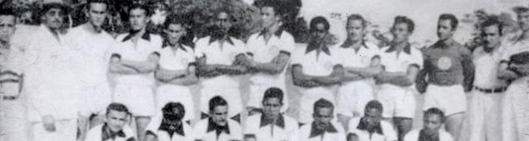

1951 - Arapiraca tinha como prefeito o Dr. Coaracy da Mata Fonseca. A cidade, ainda pequena, começava a trilhar o caminho do progresso. A feira já começava a se destacar em todo o Nordeste brasileiro. A empresa Camilo Colier estava construindo a estrada de ferro e isso exigia o trabalho de muita gente. E essas pessoas buscavam algum meio de diversão nos dias de folga. Como não poderia deixar de ser, o futebol estava em primeiro lugar. E a pedido dos funcionários, a direção da empresa resolveu construir um campo de futebol. Formou-se o time, que obteve o sugestivo nome de Ferroviário, com as cores preto e branco. As tardes de domingo da cidade passaram a ser mais movimentadas, pois seus habitantes tinham lugar certo para ir, o campo da estação. Mas a construção da estrada de ferro foi concluída. O Ferroviário acabou. A diversão das tardes de Domingo não existia mais. 1952 - Empresários e autoridades da cidade não estavam conformados com o vazio provocado pela falta do futebol. Após várias discussões, surgiu, assim, no dia 25 de setembro de 1952, a ASSOCIAÇÃO SPORTIVA DE ARAPIRACA, era "o" ASA que surgia da força empreendedora do Sr. Antônio Pereira Rocha, o primeiro presidente. 1953 - Ano do primeiro campeonato, que começou com o pé direito, sendo Campeão Alagoano logo na sua primeira participação. O regulamento da competição determinava que o campeão da capital decidiria com o campeão do interior. O ASA, bravamente, venceu o campeonato do interior. O campeão da capital, Ferroviário, no entanto, recusou-se a disputar as partidas finais. A Federação Alagoana de Futebol proclamou o ASA campeão alagoano de 1953 em ato publicado na Gazeta de Alagoas do dia 7 de abril de 1954. O título alvinegro de 1953, apesar de ser do conhecimento dos torcedores que comemoraram a conquista, acabou sendo esquecido pela mídia. Há que ser lembrado que Arapiraca em 1953 era apenas a sexta maior cidade do Estado de Alagoas (hoje é a segunda maior) e não tinha emissoras de rádio ou jornais. E acabou acontecendo a velha máxima de que uma mentira de tanto ser repetida acaba se tornando "verdade". No caso, a mentira era o título do Ferroviário da capital, amplamente divulgado. No entanto, o cidadão arapiraquense Dr. José Pereira Neto, já na década de 90, trouxe a prova do esquecido, pela mídia, título de 1953, ao pesquisar e redescobrir a Gazeta de Alagoas com o ato homologatório de 1953. O ato que colocou o ASA de Arapiraca na lista dos campeões alagoanos está exposto no Museu dos Esportes do Estádio Rei Pelé. Graças a esse primeiro título, o ASA também ficou conhecido como "O time que já nasceu campeão".
1960 a 1970 - Na década de 60 o ASA ficou conhecido como “Fantasma das Alagoas” em razão das suas brilhantes excursões pelo Nordeste brasileiro, desbancando times da região. 1973 - Mané Garrincha jogou por quase noventa minutos com a camisa do ASA. Correu, driblou, mas não fez gol. O alvinegro venceu o CSA por 1x0. Ele só saiu de campo após ajudar a vitória ao ASA, o gol do alvinegro saiu dos pés de Cambota, aos 32 minutos do segundo tempo. Mané contribuiu para devolver a derrota da semana anterior. Dias antes, a "alegria do povo", como era conhecido, vestiu a camisa do CSA em um jogo amistoso contra o alvinegro, em Maceió. Na partida, o azulino venceu por 3x1. "Seu Mané" estava se despedindo da torcida brasileira. Seu futebol estava chegando ao fim. Suas pernas tortas já não corriam como antes. Seus dribles já não eram tão eficientes. Mesmo assim, Garrincha jogou e a torcida alagoana entendeu seu drama. Foi intensamente aplaudido em sua despedida. 1977 - A associação passou a ser AGREMIAÇÃO SPORTIVA ARAPIRAQUENSE, continuando a ser o mesmo ASA. 1979 - Fez excelente campanha no campeonato brasileiro, ficando conhecido nacionalmente pela brilhante classificação para a segunda fase da competição com cinco vitórias consecutivas. 1982 - Uma idéia brotou, levando o eterno alvinegro da terra dos Andrés, a incluir a cor verde no uniforme, uma alusão à cultura do fumo que representava, até então, a principal fonte de economia de Arapiraca. 2000 - Após quase 47 anos sem vencer um campeonato, o ASA sagrou-se campeão alagoano. 2001 - ASA conquista o bicampeonato alagoano. Foi o terceiro título estadual de sua história. Na terceira partida decisiva, no estádio Coaracy Fonseca, em Arapiraca, os donos da casa marcaram 2 a 1 no CSA. Os gols foram de Denílson e Soares. 2002 - O ASA elimina o badalado Palmeiras em pleno Parque Antártica, mesmo tendo perdido por 2 a 1, seguiu em frente na Copa do Brasil por critérios de desempate, pois venceu por 1 a 0 no Fumeirão, fato muito divulgado na imprensa nacional daquele ano. 2003 - Campeão alagoano. 2005 - Campeão alagoano e campeão da Copa Alagipe. 2009 - Campeão alagono e vice-campeão do Campeonato Brasileiro da Serie C, depois de conseguir um acesso dramático em um empate por 2x2 diante do Rio Branco-AC em plena arena da floresta. Jogo que ficou conhecido como batalha do Acre. 2011 - ASA volta a vencer Coruripe e é campeão alagoano em pleno Estádio Gerson Amaral, alvinegro arapiraquense aplicou 4x3 no Hulk no segundo jogo das finais. 2013 - Vice-campeão da Copa do Nordeste. Depois de um começo ruim na competição, com três derrotas nas três primeiras partidas, todos davam o ASA como eliminado, mas a equipe deu a volta por cima e venceu os três jogos restantes se classificando em 2°. Nas quartas depois de um empate em 0x0 em Arapiraca, o ASA venceu o ABC no frasqueirão por 2x1. Passando para a semifinal o alvinegro empatou em 2x2 com o Ceará em Arapiraca, mas venceu em pleno Castelão lotado por 1x0 gol de Leo Gamalho de cabeça após cobrança de escanteio. Na final o alvinegro não conseguiu segurar a entrosada equipe do Campinense e ficou em segundo lugar na competição.